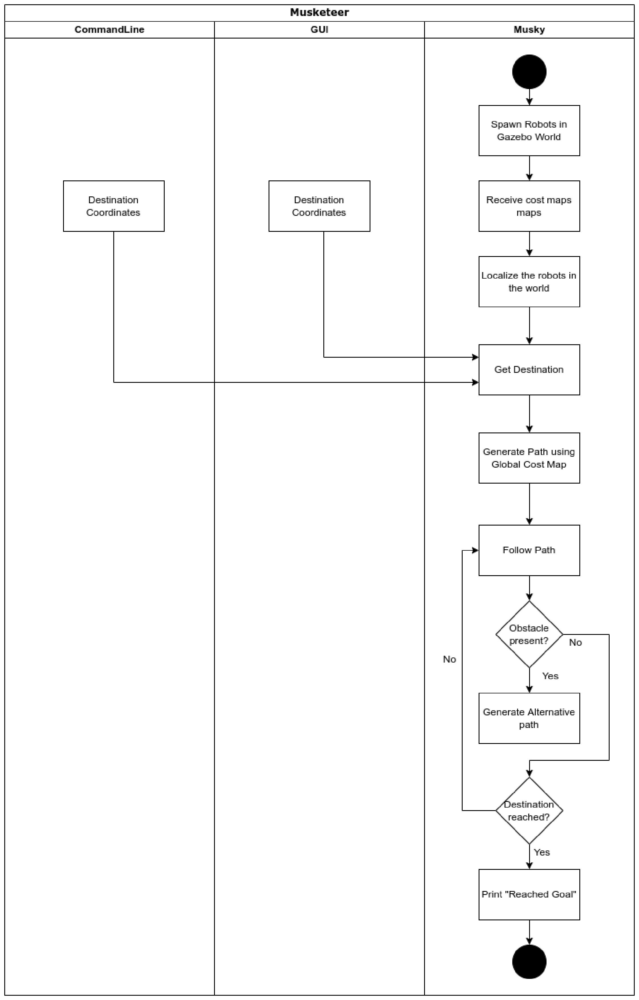
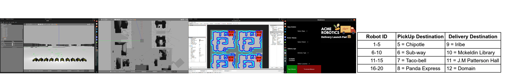

Musketeers: Autonomous pickup and delivery fleet
 In this project, we develop a multi-robot(20) autonomous delivery framework, that works with husky robots from ClearPath robotics, in a simulation environment. The robots called "Musky" could be access delivery and pickup locations via command line inputs and/or with a Graphical User Interface (GUI) , where they can be made to traverse to a preset location to pick up an order from a restaurant and will deliver it to a preset delivery location. Our proposed Robotic delivery system consists of a fleet of husky robots parked at multiple base stations, Where each base station is provided with a unique Base ID. The purpose of each station is to charge robots and act as a fulfillment center to process the order. Upon receiving the orders from customers, Our advanced Task Planner algorithms take care of assigning delivery jobs to available Musketeers with sufficient charge to fulfill the order. Upon fulfillment of the order to the destination, The robot’s destination location becomes the new source location to process the new order. These operations are further continued and planned according to the task planner. We utilised ROS "move_base" framework for the navigation of the Musketeers to reach destination location.We have used ROS "gmapping" package to create the local and global cost maps along with detecting obstacles. We developed multiple interfaces in order to interact with the user using kivy for creating the GUI and CLI for command line input. This project is being developed using agile methodologies and test driven development. For more information about this project can be accessed at the github repository.
References:
Musketeers: Autonomous pickup and delivery fleet [
pdf] [
ppt][
github]
Rahul Karanam, Sumedh Koppuala,Pratik Acharya
ENPM808X 2021

.png)
{kind=link}